Date Taken: Fall 2025
Status: Completed
Reference: LSU Professor Daniel Donze, ChatGPT
The purpose of a Virtual File System (VFS) is to provide a uniform interface for different file systems, allowing applications to access files without needing to know the specifics of the underlying file system.
A file is a collection of related data or information that is stored on a storage device. It is identified by a unique name and can be accessed, modified, and managed by the operating system and applications.
File is a named collection of related information which is recorded on a persistent storage. Logically contiguous storage area. Not necessarily physically contiguous (and likley not). File contents and type are defined by file's creator. Ultimately of little importance to OS (usually). File Formats (such as mp3, jpeg, exe, etc.) define how data is organized within thse logicallt contiguous areas.
A file system is a method and data structure that an operating system uses to manage files on a storage device. It defines how files are named, stored, organized, and accessed, as well as how space is allocated and managed on the storage medium.
A file System describes how files are mapped onto physical devices, as well as how they are accessed and manipulated by both users and programs. Accessing physical storage can often be slow, so file systems must be designed for - efficient access, support for file sharing, remote access to files. Associated file structure (imposed by OS): None (just bytes) e.g., UNIX, Lines of data or Fixed-length data records - e.g., VAX.
Structural layout to organize and manage of files and directories within a storage medium. Disk (CD-ROM, flash storage, etc.) is organized into fixed-size units. These units of storage are called generally called sectors but might also be organized into groups of sectors called blocks or clusters. Most filesystems are stream-oriented and users are generally oblivious to the division of files into sectors.
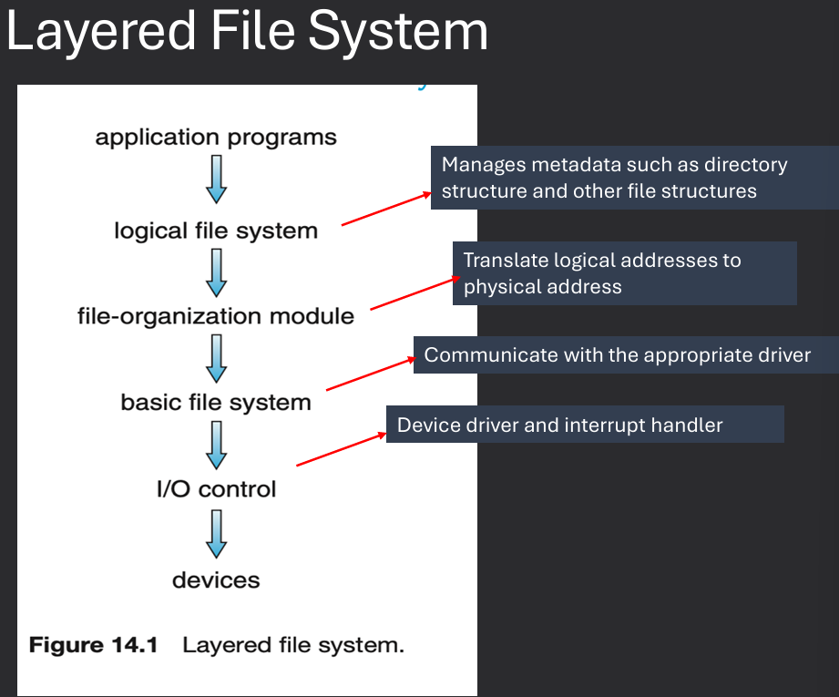
File attributes and organization are maintained by the operating system within the file system. On-disk and in-memory data structure and their design are critical to file system performance. File Operations and access mechansims are provided by the OS through system calls. File space allocation and free-space management are also handled by the file system. How to incorporate more than one filesystem? Through a Virtual File System (VFS) layer.
A directory structure is a hierarchical organization of files and directories (folders) within a file system. It provides a way to organize and manage files, allowing users to navigate and access them easily. A directory is a special file that contains information about other files. It includes the file name and a pointer to the file's location on the disk. Directories can also contain other directories, creating a hierarchical structure known as a directory tree. The top-level directory is called the root directory, and it contains all other files and directories within the file system.
A collection of nodes containing information about all files. Typically, a directory entry consists of the file's name and its unique identifier. The identifier in turn locates the other file attributes. The directory can be viewed as a symbol table that translates file names into their file control blocks (FCB). Both the directory structure and the files reside on disk.
When a file is opened, the operating system creates an entry in the open file table, which contains information about the file, such as its location, size, and access mode. The operating system also maintains a file descriptor for each opened file, which is used by applications to reference the file during read and write operations. The open file table helps the operating system manage multiple opened files efficiently and ensures that access permissions are enforced.
Typically, the operating system uses two levels of internal tables: a perprocess table and a system-wide table (open-file table)
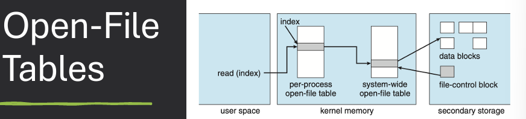
A directory structure is a hierarchical organization of files and directories (folders) within a file system. It provides a way to organize and manage files, allowing users to navigate and access them easily. A directory is a special file that contains information about other files. It includes the file name and a pointer to the file's location on the disk. Directories can also contain other directories, creating a hierarchical structure known as a directory tree. The top-level directory is called the root directory, and it contains all other files and directories within the file system.
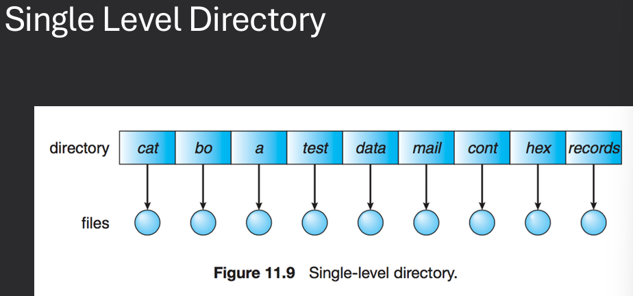
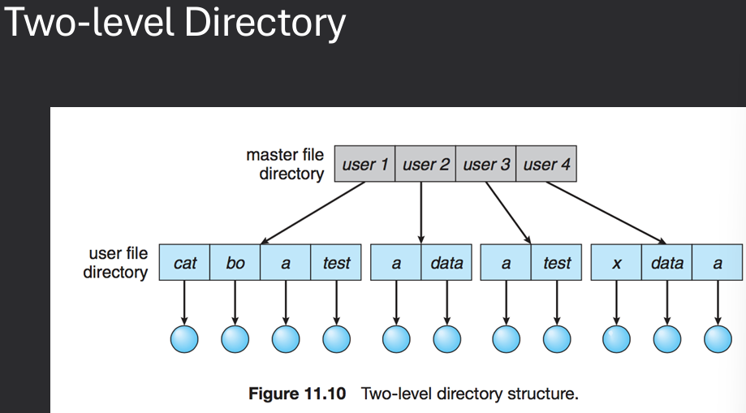
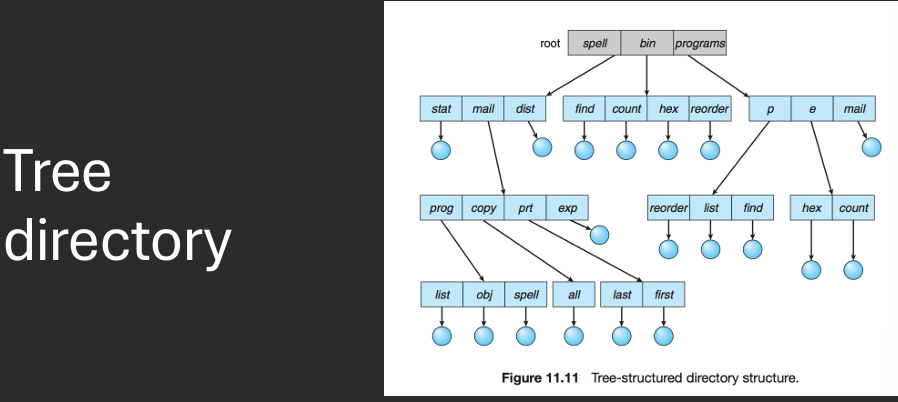
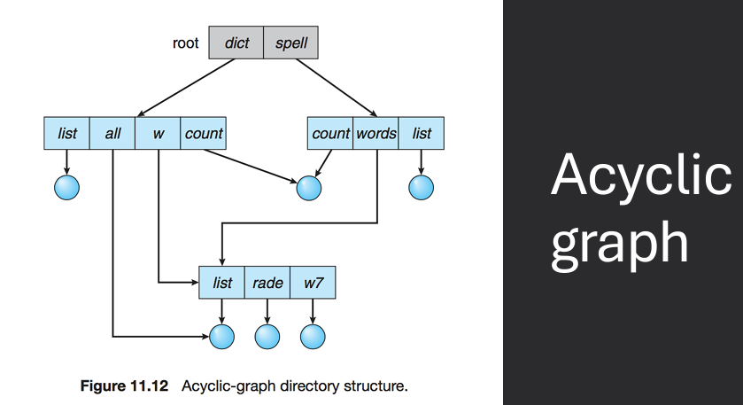
File attributes and organization are maintained by the operating system within the file system. On-disk and in-memory data structure and their design are critical to file system performance. File Operations and access mechansims are provided by the OS through system calls. File space allocation and free-space management are also handled by the file system. How to incorporate more than one filesystem? Through a Virtual File System (VFS) layer.
Disk (CD-ROM, flash storage, etc.) is organized into fixed-size pieces. These pieces are called generally called sectors but might also be organized into groups of sectors called blocks or clusters. Most filesystems are stream-oriented and users are generally oblivious to the division of files into sectors. FCB or File Control Block: storage structure which contains information about a file. Opening a file gets a handle to the FCB, which is used for accessing the file.
A File Control Block (FCB) is a data structure used by the operating system to store information about a file. It contains metadata about the file, such as its attributes, location on disk, size, and access permissions. The FCB is created when a file is opened and is used by the operating system to manage and access the file during read and write operations. The FCB typically includes fields for the file name, file type, file size, file location (pointers to data blocks), access permissions, timestamps (creation, modification, access), and other relevant information.
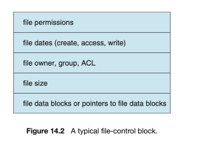
FCB or File Control Block: storage structure which contains information about a file (attributes). Inode in UNIX file system. Accessing a file gets a handle to the FCB, which is used for manipulating the file.
File space allocation methods determine how files are stored on a storage device. The three main methods are Contiguous Allocation, Linked List Allocation, and Indexed Allocation.
When storing files, we will need to decide how the data for the files is stored: where, organization, locating parts
In contiguous allocation, each file occupies a set of contiguous blocks on the disk. This method is simple and provides fast access to files since the entire file can be read in a single operation. However, it can lead to fragmentation over time as files are created and deleted, making it difficult to find large enough contiguous blocks for new files.
File occupies a contiguous set of disk blocks. Swquential and direct access are both easy with this method. Less metadata needed (only starting block and length). Growing files is difficult unless some form of compaction is used. Options for handling file growth: never, only if a proper sized hole is available, compaction, user specified max results in pre-allocation.
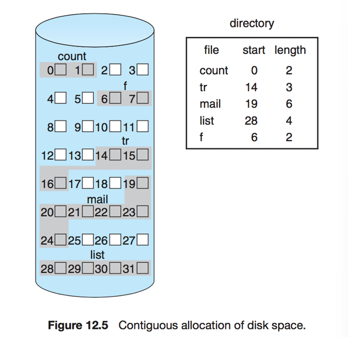
How much space is available? What is the largest file we can store at this point?
In linked allocation, each file is stored as a linked list of blocks scattered throughout the disk. Each block contains a pointer to the next block in the file. This method allows for dynamic file sizes and eliminates fragmentation, but access times can be slower since the blocks may not be stored contiguously.
Contents for each file are stored in a linked list of disk blocks. Each block contains some file data and a link to the next block in the file. Blocks may be scattered anywhere on disk. Additional blocks are allocated as the file grows. No external fragmentation. Sequential access no problem, direct access suffers. Corruption of pointer chain causes major problems.
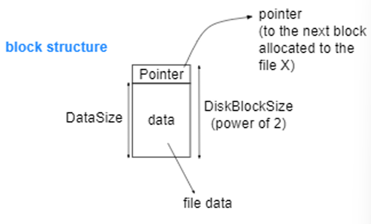
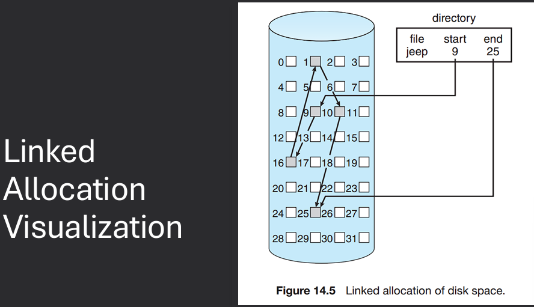
The File Allocation Table (FAT) is a variation of the linked allocation method used in many file systems. It maintains a table that maps each block on the disk to the next block in the file, allowing for efficient access and management of files.
File Allocation Table (FAT): group all pointers into a table rather than spreading them all over the disk. Allocate table at start of storage volume to contain pointers.
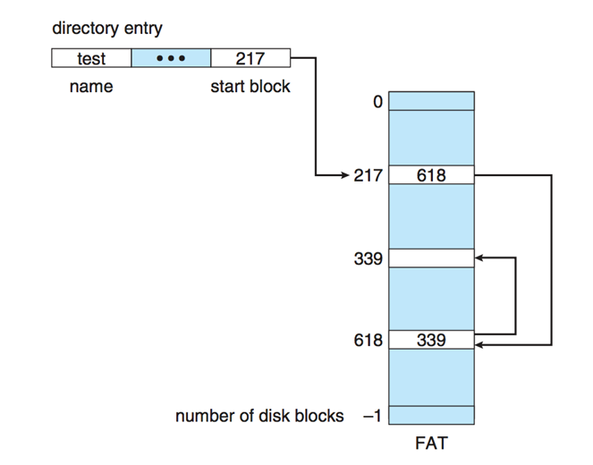
Can cache FAT entries and support direct access. Sequential access is trivial, just follow the linked list. Destruction of the FAT: Bad. popular target for viruses in olden times. MS-DOS, Windows, one of the OS/2 file systems are FAT-based. The FAT concept itself isn't responsible for some of the crippling limitations of the MS-DOS implementation, Short filenames (8.3). FAT can still be found as the system used on some small capacity devices (flash drives, embedded systems…).
In indexed allocation, each file has an index block that contains pointers to all the blocks of the file. This method allows for efficient access to files and supports both sequential and direct access. However, it requires additional metadata to store the index block.
Problem with linked allocation is that links are scattered all over. FAT partially solves this by moving the links together into a table. Indexed allocation groups the links together and associates them with a particular file. Unix file system inodes are an example.
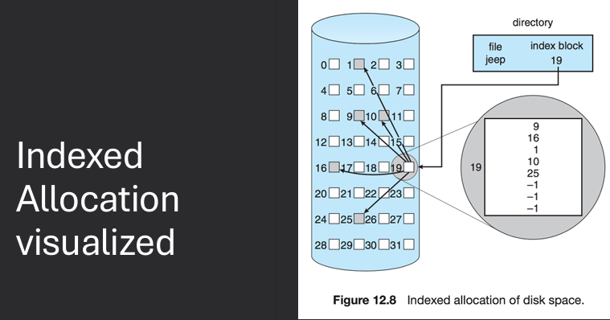
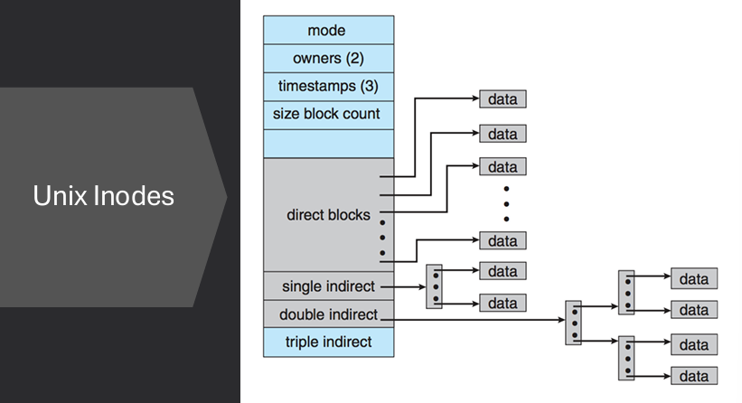
Free space management is the process of tracking and managing the available storage space on a storage device. It ensures that files can be allocated and deallocated efficiently, minimizing fragmentation and maximizing the use of available space.
Free space is the list(s) of available storage blocks in a file system. Need to track where new files / allocations can be made. Bit-vector: Maintain bit vector for free spaces and Mac OS, Windows. Linked list: Link free blocks together. Grouping: Cluster free blocks in linked list.
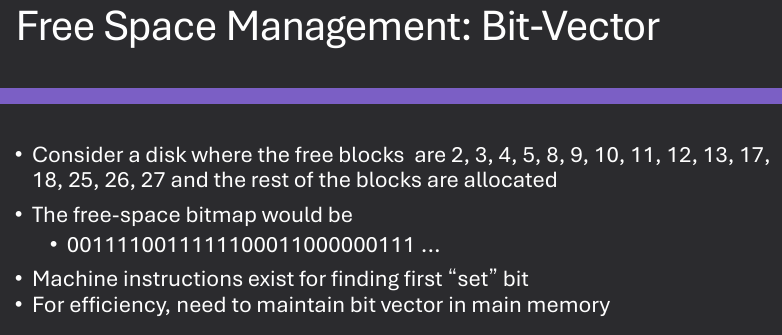
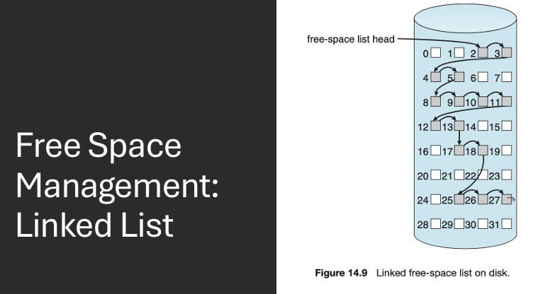
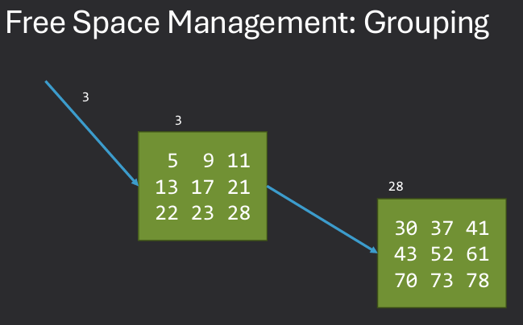
File block caching is an optimization technique used to improve file system performance by storing frequently accessed file blocks in memory. This reduces the need to access the slower storage device, resulting in faster read and write operations.
Read-Ahead: User requests block 1, start reading blocks 2,3,4,etc. Speeds up sequential access.
Write-Behind: Delay writes to disk, buffer data in memory. User writes 100 bytes, then 100 more bytes… All data can be transferred by 1 I/O request rather than multiple.
An I/O blind page cache is a caching mechanism that stores frequently accessed pages of data in memory without considering the specific I/O patterns of the application. This approach aims to improve overall system performance by reducing the number of I/O operations required to access data.
Page cache will cache pages used in memory-mapped I/O. Buffer cache stores frequently used blocks. This can lead to double caching. Entries will appear in both caches.
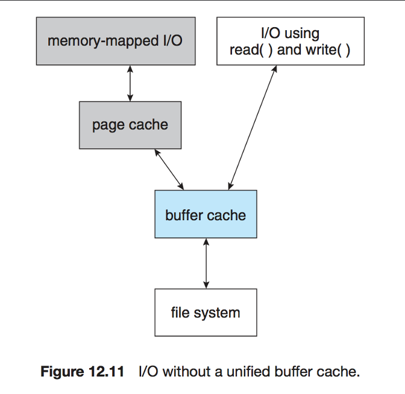
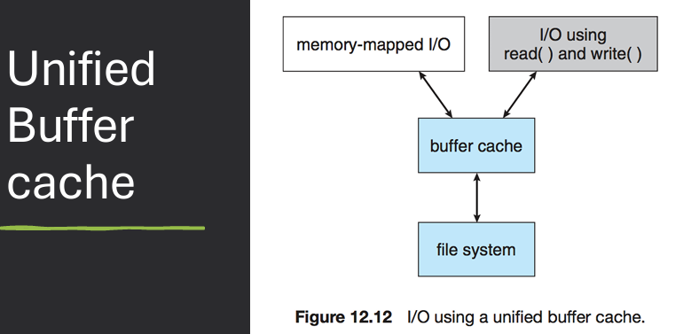
A Virtual File System (VFS) is an abstraction layer that provides a uniform interface for different file systems, allowing applications to access files without needing to know the specifics of the underlying file system. VFS enables the operating system to support multiple file systems simultaneously and allows for seamless integration of new file systems.
VFS creates an abstraction layer between applications & the underlying file system.
Calls like open(), read(), write() -> virtual interface.
Why?
One operating System can encounter multiple different File systems:
Hard drive -> ext2/3/4
USB -> FAT, VFAT, …
Attached Network drive -> NFS
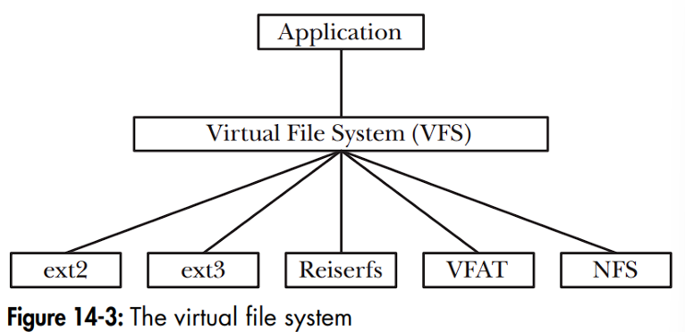
Linux VFS is a virtual file system layer in the Linux operating system that provides a uniform interface for different file systems. It allows applications to access files without needing to know the specifics of the underlying file system, enabling support for multiple file systems simultaneously.
Kernel implements a common model for filesystem operations. An array of function pointers for file operations isolates implementation of each filesystem from the kernel. Each filesystem implements a standard set of methods.
Disk-based filesystems
ext2, ext3, ext4, reiserfs, [Linux]
FATx, NTFS, HPFS [Microsoft/IBM]
XENIX, BSD, Solaris, Minix, CD-ROM, DVD
lots more, including journaling filesystems like IBM's JFS
Network-based filesystems
NFS, Coda, AFS, SMB, NCP …
Special filesystems
e.g., /proc filesystem, /dev filesystem
The VFS common file model defines a standard set of operations and data structures that all file systems must implement to be compatible with the VFS layer. This includes operations such as open, read, write, close, and seek, as well as data structures for representing files, directories, and file system metadata.
VFS introduces a common file model for all Linux file systems. Model mirrors standard Unix filesystem model. Allows native filesystem to run w/ minimal overhead. Other filesystems must conform to the model. Example: inodes are standard file allocation object in VFS / Unix. Different in FAT, used File Allocation Table. Up to the FAT implementation under VFS to model inode operations.
Most VFS operations are relatively abstract.
Rely on specific implementation in the real filesystems.
e.g. read system call: read() → sys_read() → file.f_op->read()
Commone File Model Objects Examples:
The FAT (File Allocation Table) file system is a simple and widely used file system that organizes files on a storage device using a table that maps each block on the disk to the next block in the file. It is commonly used in removable storage devices such as USB drives and memory cards.
Microsoft - MS-DOS, Win95/98/NT/2000/XP. Cluster - Basic storage unit for files. Four regions in FAT partition (in order): Boot Sector region, FAT Region, Root Directory Region, File and Directory Data Region
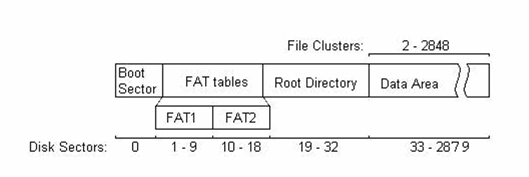
The boot sector in the FAT file system is the first sector of the storage device and contains important information about the file system, such as its size, type, and layout. It also includes the boot code that is executed when the system is started.
Boot Sector region contains BPB (BIOS Parameter Block):
Contains bootstrap code + config info for partition.
Bytes per sector, sectors per cluster.
Volume ID, # of FATs.
See reference for complete details:
https://www.win.tue.nl/~aeb/linux/fs/fat/fat-1.html
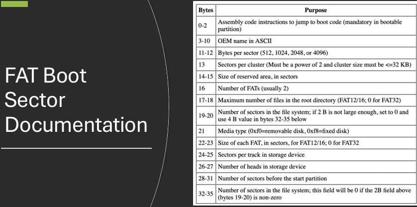
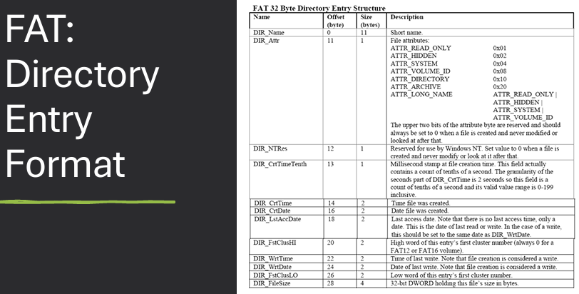
In the FAT file system, directory entries store filenames using the 8.3 filename format, which consists of a maximum of eight characters for the filename and three characters for the file extension. This format is used to maintain compatibility with older operating systems and software.
Short filenames (8 + 3 characters). If first byte of name is 0xE5, then entry is deleted. If first byte is 0x05, then first byte represents 0xE5 (valid Japanese char). If first byte of name is 0x00, all entries following this one are free: More efficient, because remaining entries don't need to be checked.
These characters are illegal: Less than 0x20 (space), except 0x05 special case. Generally, ASCII chars less than 0x20 are control characters, such as carriage return, line feed, bell, tab, backspace, etc.
0x22, 0x2A, 0x2B, 0x2C, 0x2E, 0x2F, 0x3A, 0x3B, 0x3C, 0x3D, 0x3E, 0x3F, 0x5B, 0x5C, 0x5D, 0x7C
Short filenames in the FAT file system are stored in directory entries using a specific format. The filename is divided into two parts: the name and the extension. The name consists of up to eight characters, while the extension consists of up to three characters. Both parts are stored in uppercase and padded with spaces if they are shorter than the maximum length.
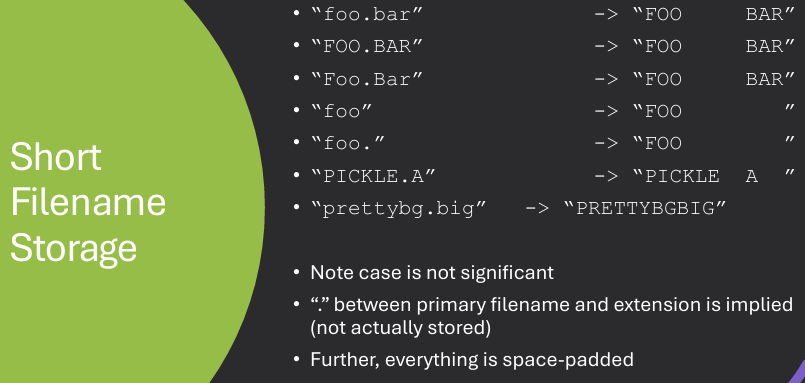
Long filenames in the FAT file system are stored using a special technique that allows for filenames longer than the 8.3 format. This is achieved by using multiple directory entries to store the long filename, with each entry containing a portion of the filename and additional metadata.
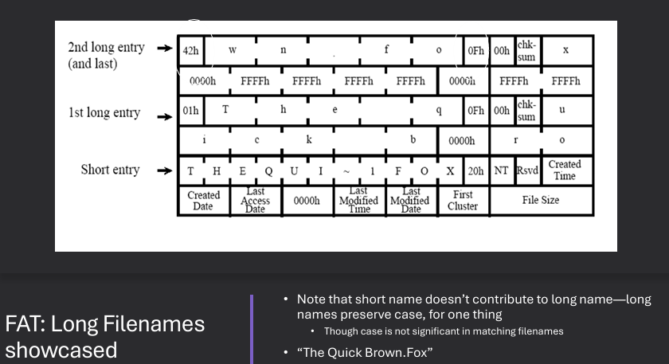
Long filename support is a hack, designed to be backwards compatible. Thus, long filenames are stored as a combination/chaining of a regular, short filename directory structure followed by a bunch of additional directory structures that will be “ignored” by non-compliant FAT versions. Must have a short filename and the long file names are stored before short file names. Special attributes to indicate long file names. Checksum to validate short file names.
Up to 255 characters in pathname component. More supported characters. Leading/trailing spaces ignored. Internal spaces allowed. Leading/embedded "." allowed. Trailing "." are ignored.
The FAT file system has several drawbacks, including limited support for large files and volumes, lack of security features, and susceptibility to fragmentation. Additionally, the 8.3 filename format can be restrictive for users who want to use longer filenames.
No ownership or access control. No encryption or compression. No journaling (risk of corruption on crash): techniques used to keep file system integrity in case of crashes during key events and power is pulled during a file write.
NTFS (New Technology File System) is a modern file system developed by Microsoft that offers advanced features such as support for large files and volumes, file compression, encryption, and access control. It is the default file system for Windows operating systems and provides improved performance and reliability compared to older file systems like FAT.
Fat12/16/32 - max volume 32MB/2GB/2TB
• 64-bit cluster numbers
• Can address 1,152,921,504,606,846,976 bytes of disk space (16 exabytes)
• Security features
• Access Control Lists
• Encryption
• Support for compression
• Support for journaling - Log File Service (LFS)
The Master File Table (MFT) in NTFS is a special file that contains information about all the files and directories on the NTFS volume. Each file and directory has a corresponding entry in the MFT, which includes metadata such as the file name, size, location on disk, and access permissions.
NTFS: Everything is a file.
Master File Table (MFT): Table that describes files and directories, Location of first entry is stored in boot sector, First entry corresponds to MFT—MFT is also a file!
MFT starts small and is expanded as needed.
MFT entries are not removed once created.
Size of MFT increases when files are created, but never shrinks.
Each entry in the MFT contains a variety of attributes that describe the file or directory. These attributes include standard information such as the file name, size, and timestamps, as well as additional metadata such as security descriptors, data streams, and indexing information.
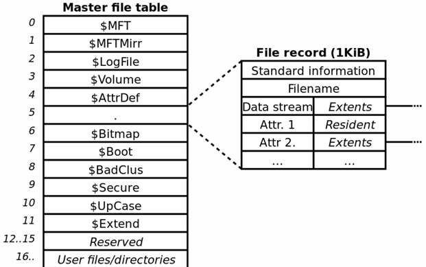
Each file and directory has an entry in MFT. Each MFT entry fixed size → 1024 bytes long. Microsoft reserves the first 16 MFT entries for file system metadata files.
NTFS uses several special metadata files to manage the file system and provide additional functionality. These metadata files include the Master File Table (MFT), the log file, the volume bitmap, and the attribute definition table.
Many system files that contain filesystem metadata
• $LOGFILE: filesystem transaction file
• $VOLUME: serial number, creation time, …
• $BITMAP: cluster allocation bitmap
• $BOOT: boot record for filesystem
• $BADCLUS: list of bad clusters for volume
In earlier versions of NTFS, these files are visible with, e.g., “dir /ah”. Completely invisible in Win2000/XP/…/→ need special forensics or system analysis and introspection tools such as fssat (sleuthkit), ntfsinfo (system internals).
NTFS transactions are a feature of the NTFS file system that ensures data integrity and consistency during file operations. They use a journaling mechanism to log changes before they are committed to the file system, allowing for recovery in case of system crashes or power failures.
Each operation that changes Filesystem data structures first writes to a log: Includes redo & undo information. After operation is complete, a commit is written to the log. If a failure occurs during the update, can use log to undo partial transactions and then re-do them from scratch. At set intervals (~5 sec), NTFS will write a checkpoint to the log: Do not need to worry about storing or dealing with transactions before a checkpoint. Note that this protects metadata, not file data.
NTFS Volume Shadow Copies is a feature of the NTFS file system that allows for the creation of point-in-time snapshots of a volume. These snapshots can be used for backup and recovery purposes, allowing users to restore previous versions of files or recover from accidental deletions or modifications.
A type of file system snapshot. A copy-on-right (CoW) is made of the filesystem. If a file is modified, the old version is written to the shadow copy. Can be used to restore file system to a known state.
Linux supports a variety of file systems, including ext2, ext3, ext4, XFS, Btrfs, and more. Each file system has its own features and characteristics, allowing users to choose the most suitable file system for their needs based on factors such as performance, reliability, and scalability.
• EXT - Extended File System
- ext2, ext3, ext4
• Complicated internal structure to enhance performance, but on-disk structure is straightforward
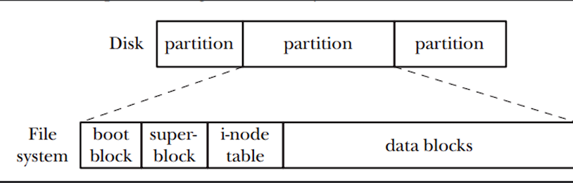
In Linux, files and directories are managed using a hierarchical file system structure. Each file and directory is represented by an inode, which contains metadata about the file or directory, such as its size, location on disk, and access permissions. Directories are special files that contain a list of entries, each of which maps a file or directory name to its corresponding inode. The Linux file system supports various file operations, such as creating, opening, reading, writing, and deleting files and directories.
ext2 is a widely used Linux file system known for its simplicity and efficiency. The classic Linux file system 1993 to 2001.
ext3 is a journaling file system for Linux that builds upon the ext2 file system. It adds journaling capabilities to improve data integrity and recovery in case of system crashes or power failures. ext3 is backward compatible with ext2, allowing for easy migration between the two file systems.
2001 to 2006 (ext2 with journaling).
Binary compatible with ext2 on-disk.
Reason for existence: huge disks == huge amounts of time to restore filesystem consistency after improper shutdown: Must check all inodes, correlate with free space tracking, etc.
ext3 improvement over ext2: journal that stores info about in-progress file operations.
On boot, can check journal and quickly restore filesystem consistency.
But: journaling filesystems could lead to potential security issues!
Journaling is a technique used in file systems to improve data integrity and recovery in case of system crashes or power failures. It involves maintaining a log (journal) of changes made to the file system before they are committed to the main file system structures. In the event of a crash, the journal can be used to replay or roll back changes, ensuring that the file system remains consistent.
Idea behind journaling: Copy blocks to be written FIRST to the journal, then to the filesystem. When blocks have successfully been written to filesystem, delete from journal. Group low-level operations together into high-level operations (transactions) and commit all or none.
Two possibilities on filesystem recovery: System failed before high level operation was committed to journal → Don't commit these changes to filesystem. System failed after high level operation was committed to journal → Do commit these changes to filesystem.
While ext3 offers several advantages, it also has some drawbacks. One of the main limitations is its lack of support for larger file sizes and volumes compared to more modern file systems. Additionally, ext3 does not support advanced features such as file system snapshots or checksumming, which can be found in newer file systems like ext4 or Btrfs.
No checksumming in the journal when writing to the journal on a storage device. Lacks some advanced features like extents, dynamic allocation inodes, and block sub-allocation. Hard to recover the deleted files since the ext3 driver deletes files by wiping file inodes. No snapshots support.
ext4 is a modern file system for Linux that builds upon the ext3 file system. It introduces several new features and improvements, such as support for larger file sizes and volumes, extents for improved performance, and better allocation algorithms. ext4 is backward compatible with ext3, allowing for easy migration between the two file systems.
Large file system support
• Volumes up to 1EB
• Files up to 1TB
Extents
• Ranges of contiguously allocated blocks
• Improves performance for large files
• Four extents per inode, each can address 128MB
Compatibility
• With some limitations, on-disk compatibility with ext2/3 (unless extents are used)
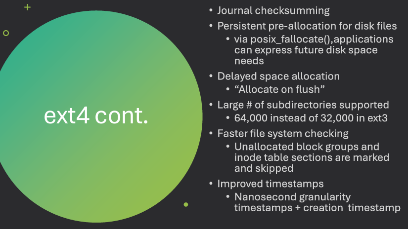